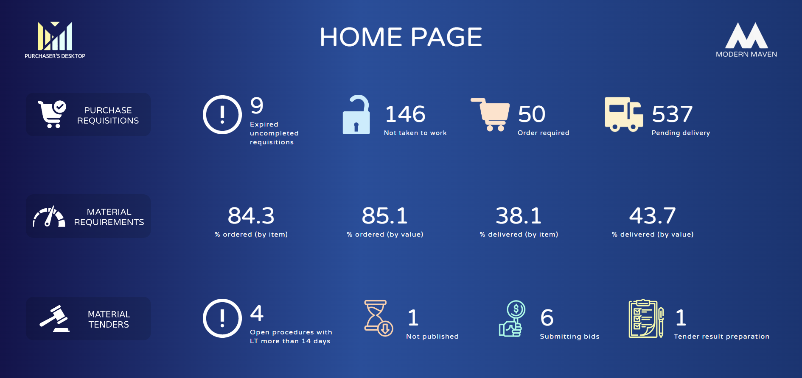
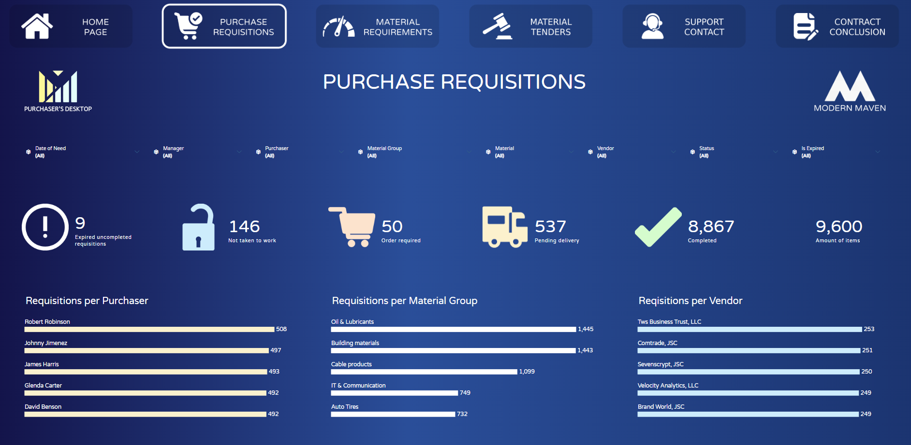
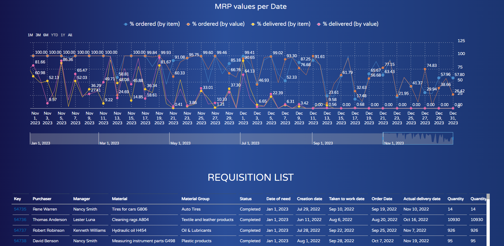
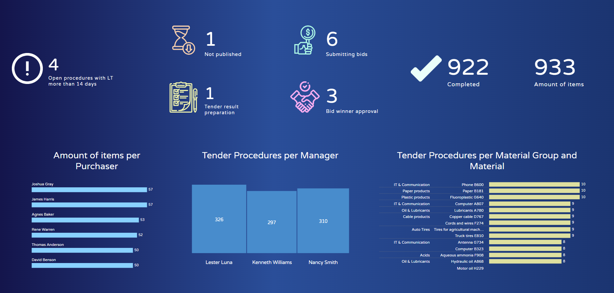
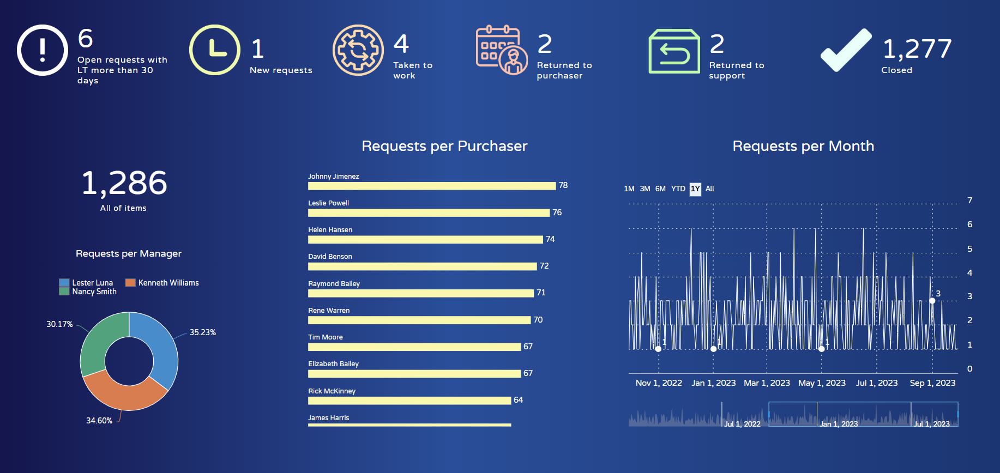
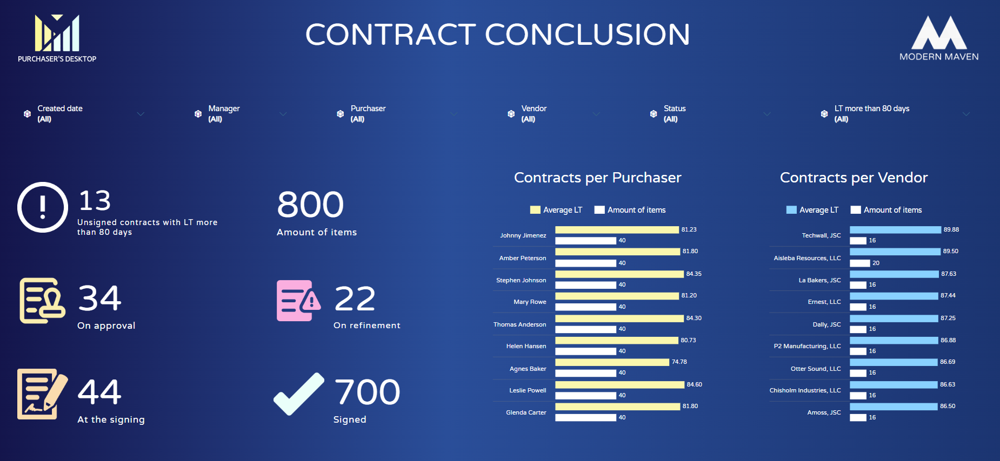

Purchaser's Desktop
| Project Name | BI Platform | Country | Industry | Department | Duration |
|---|---|---|---|---|---|
| Purchaser's Desktop | SAC | Uzbekistan |  Aviation |  Purchasing Department | 5 months |
The goal of the project was to create a unified data warehouse necessary for the work of the purchasers in SAP Data Warehouse Cloud, and then to create a product in SAP Analytics Cloud that would display the entire picture of the purchasing department's activities and point out problem areas for immediate response by the purchasers. The product consists of 6 pages, namely the main menu and 5 pages of indicators, such as “Purchase Requisitions”, “Material Requirements”, “Material Tenders”, “Support Contact” and “Contract Conclusion”. The main menu is an important part of this product for the purchasers, managers and director, as well as the main navigation tool for these 5 indicators. The main menu reflects the problem areas of the purchasing department, namely, the values near the exclamation marks in each indicator show the number of problematic purchase requisitions, tender procedures, requests to the support department and contracts. Additionally, on the main menu, it is possible to see the information about the number of open requisitions, requests, procedures and contracts per status.
The main purpose of the first indicator "Purchase Requisitions" is to ensure timely delivery by the vendor of purchase requisitions. Each requisition has the following lifecycle: creation, taking to work, ordering by the purchaser and delivery by the vendor, that is, closing of the requisition. Based on this, each requisition has its own status, and on the main panel of the page we can see the number of requisitions in the status of "Not taken to work", "Order required", "Pending delivery" and "Completed". The main panel and in general all visual elements of the page are managed using filters. The visual element of the detailed table is available in every page of the indicator, including a URL link transition from SAP Analytics Cloud to the source system.
In difference to the Purchasing requisition, the second indicator "Material Requirements" is analytical rather than operational. It reflects the percentage coverage of material requirements over a specified period of time. According to the customer's requirement, we had to use two methodologies to calculate the proportion: simple ("by item") and weighted average ("by value"). In the "by item" methodology the number of requisitions with an order was calculated in relation to all requisitions. And in the "by value" methodology, the Requisition amount (in dollars) was taken into account in calculating the proportion.
The third indicator is material tender analysis. Each tender procedure has the following lifecycle: creation, publishing, submitting bids, tender result preparation and bid winner approval, that is the completion of the tender procedure. Based on this, each tender procedure has its own status, and on the main panel of the page we can see the number of tender procedures in the status of "Not published", "Submitting bids", "Tender result preparation", "Bid winner approval" and "Completed". The number of open procedures with Lead Time more than 14 days is displayed next to the exclamation mark as an metric of the indicator's problematic area.
The fourth indicator "Support Contact" is required to monitor requests to the support department. The support department provides any kind of support to the purchaser when working on a purchase requisition, ordering, communication with the vendor, tendering and contracting. The purchaser creates a request to the support department in the source system, and after that the purchaser can monitor the status of the request in the purchaser's desktop. Requests can be in the status "New requests", "Taken to work", "Returned to purchaser", "Returned to support" and "Closed". We can see analytics by these statuses on the main panel of the page. Also at the beginning of the main panel it is possible to see the metric "Open requests with Lead Time more than 30 days" near the exclamation mark. Its existence indicates that each request to the support department should be closed within 30 days after its creation.
The last metric of this product "Contract Conclusion" reflects the analytics of all contracts with vendors, on which the purchasing department works. The task of the buyer is also here as a control over the status and lead time of the contract, in case of any problems to immediately contact the vendor or his manager.
The Purchaser's Desktop product also has a mobile version. The mobile version is available from both the browser and the SAP Analytics Cloud app for Android and iOS. In the mobile app, we have almost the same view of the product as the PC version, but this version is more customized for mobile devices.
As part of this product, four models were developed, which are built on the basis of about 15 dimensions and four fact tables.